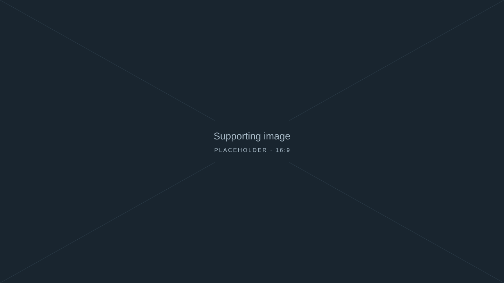

01 / The overview
Establish the picture
Placeholder narrative. The graphic begins in its complete state, introducing the elements that the story will explore.


UNGA–SG · Working draft
Placeholder introduction to the story: a short summary of the central question and why it matters.
Publication date to come
↓Introduction
Placeholder copy. Introduce the subject, establish the context and set up the question explored in the graphic below.
A second paragraph can explain what the reader should look for as the graphic changes. The final text, artwork and sources will replace this working content.
Graphic placeholder · Illustrative only
01 / The overview
Placeholder narrative. The graphic begins in its complete state, introducing the elements that the story will explore.
02 / The detail
Placeholder narrative. A group of elements is highlighted while the rest recede, directing attention to the next point.
03 / The connections
Placeholder narrative. Connections appear in the same graphic to complete the explanation before the story returns to static text and imagery.
Further context
Placeholder copy. Develop the main finding here, adding context and analysis that do not need an animated visual.

Placeholder copy. Use this section for additional analysis, a forward-looking conclusion or the implications of the story.
Placeholder closing paragraph. Bring the explanation back to the central question and leave the reader with the final takeaway.